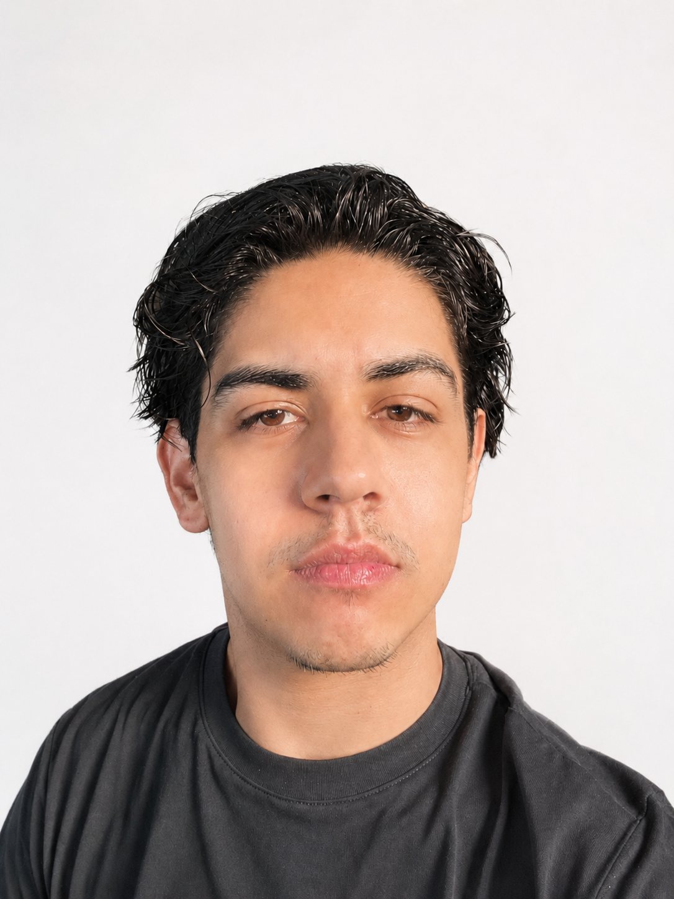

Soy diseñador digital enfocado en crear proyectos visuales, funcionales e interactivos. Trabajo con diseño web, identidad visual, fotografía y experiencias digitales, combinando estética, estrategia y tecnología para transformar ideas en soluciones claras y atractivas.

Sobre mí
Soy diseñador digital originario de Ciudad Juárez y estudiante de la UACJ. Tengo experiencia en fotografía, branding, retoque fotográfico y desarrollo web frontend y backend. Me interesa crear proyectos visuales, funcionales e interactivos que conecten diseño, tecnología y comunicación.
¿Qué hago?
Experiencia
Mis Trabajos
Kiara's
Branding / Rediseño de marca / Identidad visual
Proyecto de rebranding enfocado en el rediseño del logotipo de Kiara’s Closet. El objetivo fue renovar la identidad visual de la marca, manteniendo una estética moderna y versátil que pudiera adaptarse a distintos medios digitales y aplicaciones gráficas.

Bloom
Branding / Identidad visual / Redes sociales
Branding para BLOOM, proyecto realizado dentro de Velvet. Desarrollé la identidad visual, contenido para redes sociales y apoyo en la organización del evento, manteniendo una comunicación visual coherente y atractiva.

AutoCare
Desarrollo Web
AutoCare es una aplicación web enfocada en la gestión de servicios automotrices, evidencias digitales, vehículos y usuarios. El proyecto integra una interfaz web con operaciones CRUD, autenticación y administración de información.


Border Fashion Week
Branding / Identidad visual / Concepto
Proyecto de identidad visual para Border Fashion Week, en el que participé en el diseño del logotipo, el desarrollo del branding y la construcción del concepto general del proyecto. La propuesta buscó representar una visión contemporánea de la moda fronteriza, integrando estilo, creatividad e identidad visual en una marca adaptable para medios digitales, aplicaciones gráficas y comunicación del evento.

.png)